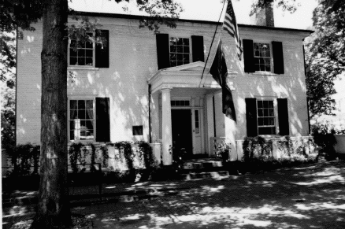
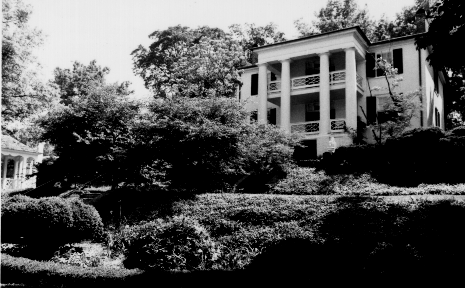

24 N. Coalter Street
Woodrow Wilson Birthplace
Staunton, Virginia

-
Constructed: 1846
-
Original Use: Residence
-
Ownership History: Built as the manse for the First
Presbyterian Church. Thomas Woodrow Wilson was born in the house in
1856.
-
Number of Stories: 2 and basement
-
Architectural Style: Greek Revival.
-
Exterior Features: Brick construction with hip roof and
entrance porch with one-story pediment. Greek Revival entrance
portico with fluted Doric columns. Three-story rear portico
overlooking garden.
-
Interior Features: N/A